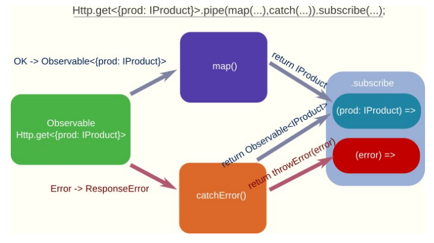

UD6 - 4. HttpClient¶
El módulo HttpClient¶
En las aplicaciones reales se obtienen los datos de un servicio web utilizando peticiones HTTP en segundo plano (asíncronas). Angular proporciona el servicio HttpClient para realizar peticiones HTTP.
Este servicio se encuentra en el módulo @angular/common/http, por lo que debemos importarlo en la configuración principal de la aplicación. Debemos importar el provideHttpClient() en app.config.ts:
Se va a modificar el servicio ProductoService para que obtenga los datos de un servicio web. Para ello, se va a utilizar el servicio HttpClient de Angular. Este servicio se inyecta en el constructor del servicio ProductoService:
- Se importa el servicio
HttpClientde@angular/common/http. - Se crea la propiedad
productsEndpointque contiene la URL del servicio web. - Se inyecta el servicio
HttpClienten el constructor del servicioProductoService. - En el método
getProducts()se utiliza el métodoget()del servicioHttpClientpara realizar una petición HTTP GET a la URL del servicio web. Este método devuelve un objetoObservableque contiene un array de productos. Más adelante veremos qué es unObservable.
Repaso de los métodos básicos HTTP¶
La petición y respuesta del servidor será mediante el protocolo HTTP. Cuando hacemos una petición HTTP, el navegador envía al servidor: cabeceras (como useragent el cual identifica al navegador, las preferencias de idioma, etc.), el tipo de petición HTTP y parámetros o datos (si son necesarios).
Hay muchos tipos de petición que podemos enviarle al servidor. Los más usados cuando realizamos una llamada AJAX (o accedemos a un servicio web) son:
GET: se utiliza para obtener datos del servidor. No modifica los datos del servidor.POST: se utiliza para enviar datos al servidor. Creando un nuevo recurso.PUT: se utiliza para actualizar datos. Sustituye todos los datos del recurso.PATCH: se utiliza para actualizar parcialmente datos en el servidor. Sólo actualiza los datos que se envían en la petición.DELETE: se utiliza para eliminar datos en el servidor.
RxJS y Observables¶
Se podría trabajar con Promesas para realizar las peticiones HTTP. Sin embargo, Angular trabaja por defecto con la librería RxJS. Es decir, utiliza Observables, que son como una versión más avanzada de las promesas.
Estas son algunas diferencias entre usar promesas y observables:
-
Una Promesa devuelve un sólo valor futuro (lo que para una petición HTTP es suficiente). Un Observable puede emitir varios valores a lo largo del tiempo.
-
Una Promesa se ejecuta (el código interno) cuando se crea. Un Observable sólo empieza cuando alguien se suscribe a él (lazy loading).
-
Una Promesa no puede ser cancelada, mientras que un Observable puede dejar de ejecutarse si se cancelan las suscripciones a él.
-
Los observables tienen muchos métodos (operadores) como
map,filter,reduce, etc. Las promesas usan el método genéricothenpara todo.
Cualquier llamada http (get, post, put, delete, etc.) devuelve un Observable (una operación futura). Para obtener los datos que vaya a emitir dicho Observable en el futuro, debemos suscribirnos a él.
Sin embargo, podemos establecer un procesamiento intermedio de los datos, entre la respuesta que nos llega en “crudo” del servidor y el dato que realmente queremos guardar/mostrar, usando operadores intermedios como map, filter, tap, etc.
Esto es lo que hacen los métodos nombrados anteriormente:
map: Obtiene el dato devuelto por el Observable (o el operador anterior si concatenamos varios), aplicamos alguna transformación al dato y la devolvemos (el método devolveráObservable<DatoTransformado>).tap: Se utiliza normalmente para operaciones de depuración (mostrar datos por consola, etc.). No devolvemos nada en este método porque automáticamente devuelve un Observable con el mismo dato que recibe (no modifica nada).filter: Cuando el observable devuelve más de un dato a lo largo del tiempo (por ejemplo si trabajamos con eventos). Este método sólo dejará pasar aquellos que cumplan una determinada condición (devolvemos un booleano).
Los operadores se importan de rxjs/operators, y se aplican como parámetros del método pipe de la clase Observable en el orden establecido (encadenados).
Procesando respuestas con Observables¶
Cada vez que un observable emite un valor, este se puede procesar con los métodos u operadores intermedios nombrados antes. Sin embargo, el observable no empieza a emitir valores (no se ejecuta su código interno) hasta que nos suscribimos a él (pueden haber varias suscripciones al mismo observable).
Para suscribirnos debemos llamar al método subscribe. Este método es un método final, lo que significa que ya no podemos encadenar nada más después.
Este método puede recibir hasta tres parámetros, que deben ser funciones:
- La primera función recibirá el resultado final devuelto por el observable (y procesado por los métodos intermedios).
- Si se produce algún error en el observable (o lo lanzamos nosotros en algún método intermedio) se llamará en su lugar a la segunda función (opcional), que recibirá dicho error.
- La tercera función (opcional) se ejecutará al final siempre independientemente de si se produce algún error o no. Es el mismo concepto que el bloque
finallyde una estructuratry...catch.
Observable.pipe( map(…), catchError(…) ).subscribe(
(result) => // Procesar los datos devueltos
(error) => // Procesar el error
() => // Se ejecutará siempre al final (sin parámetro)
)
Sin embargo, a veces podríamos querer recuperarnos de un error, o simplemente procesar el error y devolverlo en un formato diferente. Para ello tenemos el operador catchError. Este método intermedio sólo se ejecuta si se produce algún error en el observable o en un método intermedio anterior.
Si queremos recuperarnos del error, debemos devolver un nuevo observable con datos correctos (podría ser otra llamada HTTP por ejemplo). Por otro lado, si queremos seguir con el error pero cambiando el formato, debemos devolver un observable con error (método throwError).
El siguiente esquema muestra un ejemplo de una llamada HTTP, y qué podríamos hacer si todo va bien o se produce un error (hay muchas posibilidades). En este caso el método catchError podría devolver datos válidos de alguna manera (recuperación de error) o formatear el error.
Finalmente, como dijimos anteriormente, si al método subscribe le llega un dato sin error se ejecutará la primera función, mientras que en caso de error se ejecutará la segunda en su lugar.

Ejemplo de uso: Partiendo de una respuesta JSON con la siguiente estructura:
{
"products": [
{
"id": 1,
"description": "WD BLACK SN770 2TB NVMe SSD",
"price": 115,
"available": "2023-10-03",
"imageUrl": "http://placehold.it/200x100",
"rating": 5
},
{
...
},
]
}
Para obtener sólo el array de productos, se utiliza método map, a su vez, se capturan los posibles errores con catchError y se formatean con throwError:
getProducts(): Observable<Product[]> {
return this.http.get<{ products: Product[] }>(this.productsEndpoint).pipe(
map(response => response.products),
catchError((resp: HttpErrorResponse) =>
throwError(() =>
new Error(`Error obteniendo productos. Código de servidor: ${resp.status}. Mensaje: ${resp.message}`))
));
}
Otro método útil para la recuperación de errores es retry. Cuando llega la cadena de procesamiento a este método, si se detecta que ha habido un error, se reinicia el observable (se vuelve a ejecutar desde el principio) tantas veces como le indiquemos por parámetro. Si se supera el número de reintentos y sigue habiendo un error, entonces se deja pasar.
Por ejemplo, para repetir la llamada HTTP 3 veces antes de darnos por vencidos (por si la red funcionara mal):
getProducts(): Observable<Product[]> {
return this.http.get<{ products: Product[] }>(this.productsEndpoint).pipe(
retry(3),
map(response => response.products),
catchError((resp: HttpErrorResponse) =>
throwError(() =>
new Error(`Error obteniendo productos. Código de servidor: ${resp.status}. Mensaje: ${resp.message}`))
));
}
Obtención de datos en el servicio de Angular¶
Muchas veces, el servidor nos devolverá una respuesta en formato JSON. Generalmente, los datos que queremos obtener se encontrarán dentro de ese objeto JSON, o también puede que queramos hacer ciertas transformaciones intermedias como pasar las fechas de string a objeto Date, etc. Para ello se usa el método map.
Además de crear interfaces para cada tipo de objetos que maneje el programa (productos, usuarios, etc.), es una buena idea crear una o varias interfaces para "mapear" la respuesta del servidor:
import { Product } from "./product";
export interface ResponseProducts {
products: Product[];
}
Aunque para el ejemplo no es necesario, ya que se devuelve un array de productos. El código del servicio quedaría así:
...
// obtiene todos los productos
// GET /products
getProducts(): Observable<Product[]> {
return this.http.get<Array<Product>>(this.productsEndpoint).pipe(
catchError((resp: HttpErrorResponse) =>
throwError(() =>
new Error(`Error obteniendo productos. Código de servidor: ${resp.status}. Mensaje: ${resp.message}`))
));
}
...
En la clase ProductsListComponent, se suscribe al observable con el método subscribe y se asigna el array de productos a mostrar cuando este sea devuelto. Al suscribirse se le pasa una función que recogerá el valor devuelto por el observable.
ngOnInit() {
this.productService.getProducts().subscribe(responseProducts => this.products = responseProducts);
}
Opcionalmente, se le puede pasar una función que se ejecute cuando hay algún error, y otra función que se ejecute cuando todo haya terminado independientemente de que haya habido error o no (por ejemplo para quitar una animación de carga de datos). En este caso hay que pasarle un objeto que contenga las funciones que queramos definir (next -> todo ok, error -> fallo, complete -> finalizado).
ngOnInit() {
this.productService.getProducts().subscribe({
next: prods => this.products = prods,
error: err => console.error(err),
complete: () => console.log('Productos obtenidos')
});
}
Métodos POST, PUT, PATCH, DELETE¶
La diferencia entre GET/DELETE y POST/PUT/PATCH, es que estos últimos envían datos al servidor en el cuerpo de la petición (para insertar o modificar algo). Estos datos se envían como segundo parámetro después de la URL en la petición.
En el siguiente ejemplo se va a cambiar la puntuación de un producto en el servidor. Se llamará al un servicio PATCH (modificación) con la URL /products/{idProduct}, y se actualizará la nueva puntuación en un objeto JSON: {rating: nueva_puntuación}. Primero se añade el método updateRating al servicio ProductService:
// actualiza el rating de un producto
// PATCH /products/:id { rating: number }
updateRating(id: number, rating: number): Observable<Product> {
return this.http.patch<Product>(`${this.productsEndpoint}/${id}`, { rating }).pipe(
catchError((resp: HttpErrorResponse) =>
throwError(() =>
new Error(`Error al actualizar rating. Código de servidor: ${resp.status}. Mensaje: ${resp.message}`))
));
}
En el segundo parámetro del método patch se envía un objeto JSON con la propiedad rating, que contiene la nueva puntuación.
Desde el componente ProductItemComponent, llamaremos al servicio cuando detectemos un cambio de la puntuación, y no actualizaremos la propiedad del producto hasta que el servidor no nos haya respondido. Se puede recargar la página para comprobar que este cambio es permanente en el servidor.
constructor(private productService: ProductService) { }
changeRating(rating: number) {
if (this.product.id) {
this.productService.updateRating(this.product.id, rating).subscribe(prod => this.product = prod);
}
}
Por ahora no se va a añadir un formulario para crear productos (se hará en un futuro), se va a ver como enviar al servidor un producto para insertarlo. En este caso, el servidor devolverá un objeto de respuesta con el producto insertado (ya que le habrá asignado una id o clave primaria, una URL con la imagen guardada en el servidor, etc.).
El método de ProductsService encargado de llamar al servidor para añadir un producto usando POST, recibirá el objeto (Product) a insertar y lo enviará tal cual, devolviendo a su vez el producto (insertado) devuelto por el servidor:
// agrega un producto
// POST /products
addProduct(product: Product): Observable<Product> {
return this.http.post<Product>(this.productsEndpoint, product).pipe(
catchError((resp: HttpErrorResponse) =>
throwError(() =>
new Error(`Error crear producto. Código de servidor: ${resp.status}. Mensaje: ${resp.message}`))
));
}
Usar interceptores¶
Los interceptores son clases que se ejecutan antes de realizar una petición HTTP, y pueden modificar la petición. También se ejecutan después de recibir la respuesta del servidor, y pueden modificar la respuesta antes de que se devuelva al código que la ha llamado.
Un ejemplo típico sería añadir un token de autenticación a todas las peticiones HTTP, o añadir una cabecera con el idioma de la aplicación, etc.
En el ejemplo se va a crear un interceptor para establecer la URL base del servicio web.
Primero se crean diferentes entornos de la aplicación en el archivo environment.ts:
Para ello, primero se han de crear los entornos. El siguiente comando inicializa el directorio donde se guardarán los archivos de configuración:
Se deben modificar los archivos:
environment.ts(entorno de desarrollo):
export const environment = {
production: false,
baseUrl: 'http://localhost:3000'
};
environment.prod.ts(entorno de producción):
export const environment = {
production: true,
baseUrl: 'http://localhost:3000'
};
En el ejemplo se ha añadido la propiedad baseUrl que contiene la URL base del servicio web, como todavía no se dispone de un servidor web, se utilizar en ambos casos el servicio json-server.
Ahora se crea clase BaseUrlInterceptor que implementa la interfaz HttpInterceptor:
import { HttpInterceptorFn } from '@angular/common/http';
import { environment } from '../../environments/environment';
export const baseUrlInterceptor: HttpInterceptorFn = (req, next) => {
const reqClone = req.clone({
url: `${environment.baseUrl}/${req.url}`
});
return next(reqClone);
};
En el método intercept se clona la petición y se le añade la URL base del servicio web. Para que el interceptor se ejecute, se debe añadir la configuración principal de la aplicación appConfig en el archivo app.config.ts: